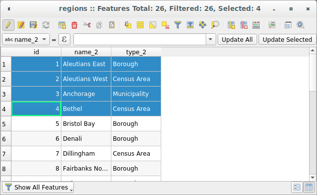
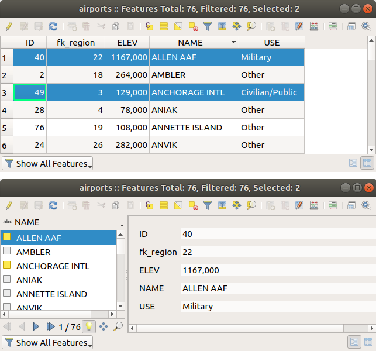
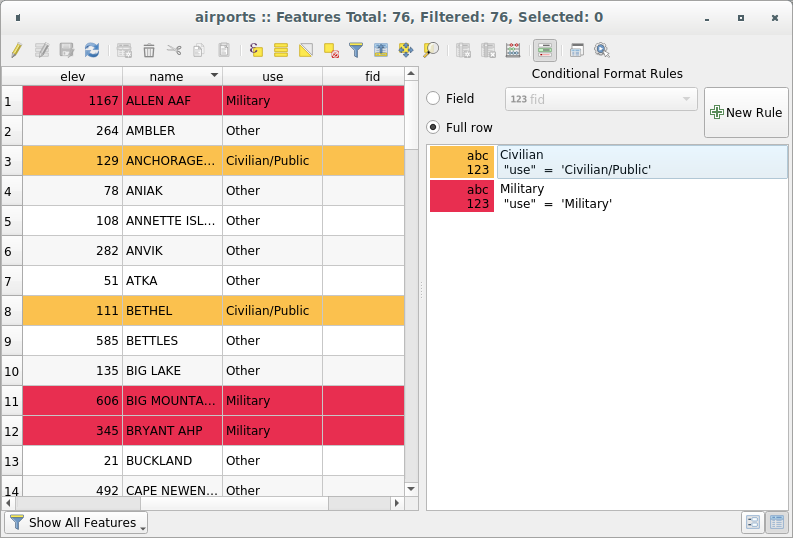
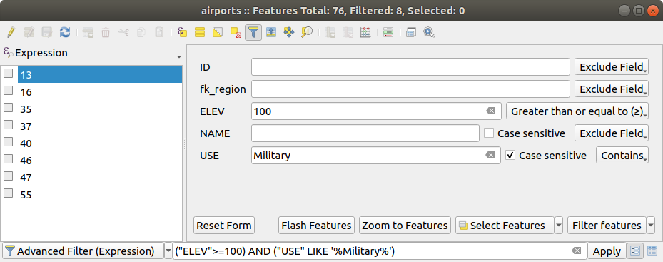
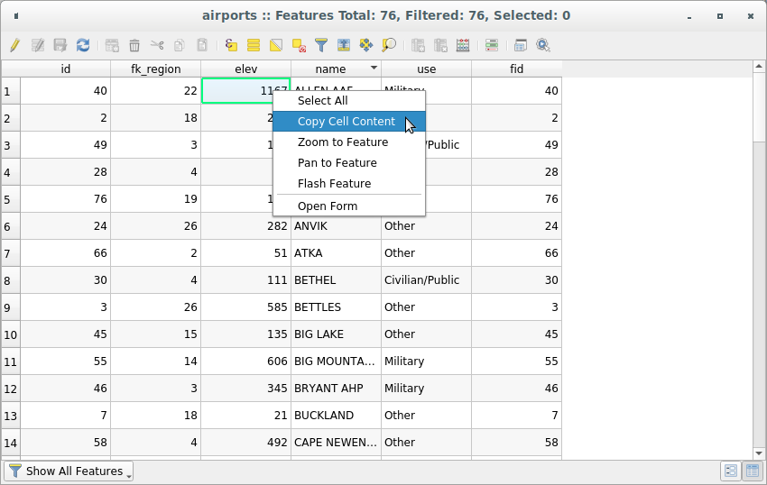
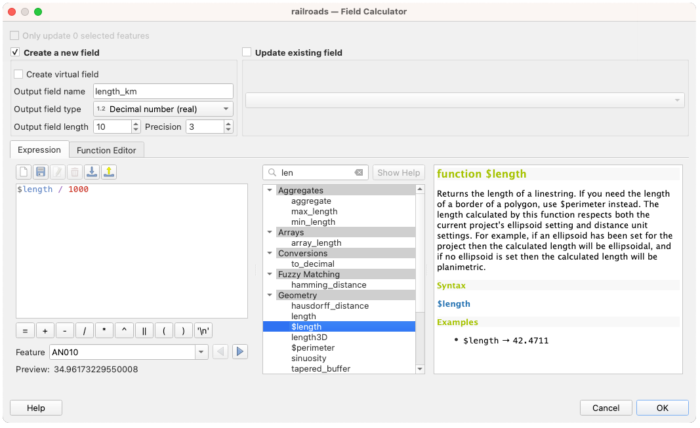
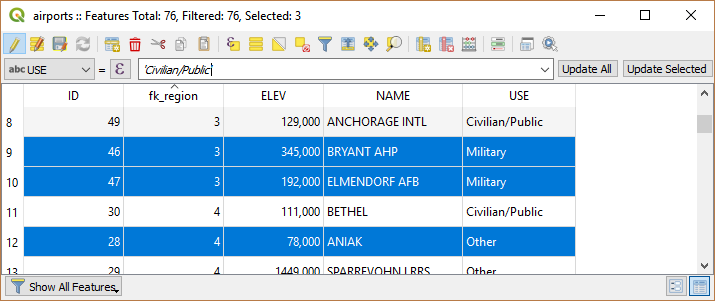
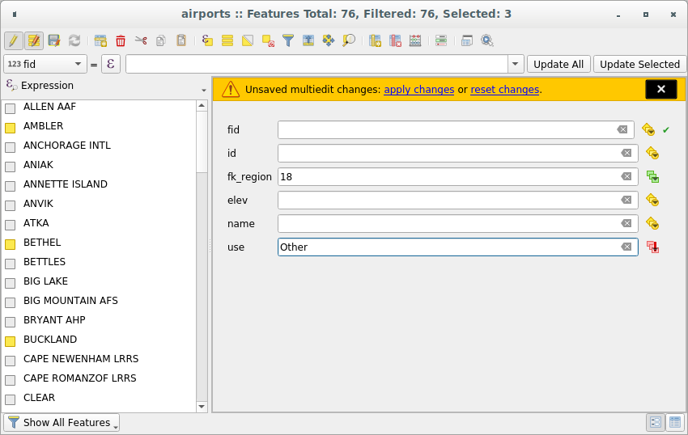

重要
翻訳は あなたが参加できる コミュニティの取り組みです。このページは現在 93.22% 翻訳されています。
12.2. 属性テーブルの操作
属性テーブルは選択されたレイヤの地物の情報を表示します。各行は（ジオメトリを持つ持たないに関わらず）１つの地物を表し、各列はその地物のある特定の情報を持っています。属性テーブルの地物は検索、選択、移動および編集が可能です。
12.2.1. 序文: 空間情報のあるテーブル、空間情報のないテーブル
QGISでは、空間レイヤと非空間レイヤを読み込むことができます。これには現在、GDALや区切りテキストでサポートされているテーブル、PostgreSQL、MS SQL Server、SpatiaLite、Oracleプロバイダが含まれます。読み込まれたすべてのレイヤは レイヤ パネルに一覧表示されます。レイヤが空間的に有効かどうかによって、マップ上でそのレイヤを操作できるかどうかが決まります。
空間情報を持たないテーブルは、属性テーブルビューを使用して閲覧や編集ができます。さらに、これをフィールドの参照値に使用することも可能です。例えば、空間情報を持たないテーブルの列を使用して、編集モード中の特定のベクタレイヤに追加される属性値や許容される値の範囲を定義することができます。詳しくは、 属性フォームプロパティ セクションの編集ウィジェットを参考にしてください。
12.2.2. 属性テーブルのインタフェースの紹介
ベクタレイヤの属性テーブルを開くには、 レイヤパネル 内でレイヤをクリックしてアクティブにします。次に、メインメニューの メニューから、  を選択します。レイヤを右クリックして、メニューから を選択するか、属性ツールバーの 属性テーブルを開く ボタンをクリックしても開くことができます。ショートカットキーがお好みなら、 F6 を押すと属性テーブルが開きます。 Shift+F6 は、選択した地物でフィルタリングされた属性テーブルを開き、 Ctrl+F6 は表示されている地物のみでフィルタリングされた属性テーブルを開きます。
を選択します。レイヤを右クリックして、メニューから を選択するか、属性ツールバーの 属性テーブルを開く ボタンをクリックしても開くことができます。ショートカットキーがお好みなら、 F6 を押すと属性テーブルが開きます。 Shift+F6 は、選択した地物でフィルタリングされた属性テーブルを開き、 Ctrl+F6 は表示されている地物のみでフィルタリングされた属性テーブルを開きます。
これにより、レイヤの地物属性を表示するウィンドウが開きます（ figure_attributes_table ）。 メニューの設定により、属性テーブルはドックウィンドウとして開くか、または通常のウィンドウで開きます。レイヤ内の地物数の合計や、選択中の地物数、フィルタリングされた地物数が属性テーブルのタイトルに表示されます。また、レイヤが空間的に制限されているかどうかも表示します。

図 12.73 地域レイヤの属性テーブル
属性テーブルウィンドウの上部にあるボタンには以下の機能があります。
アイコン |
ラベル |
目的 |
デフォルトのショートカット |
|---|---|---|---|
|
編集モード切替 |
編集機能を有効にする |
Ctrl+E |
|
マルチエディットモード切替 |
多くの地物の複数のフィールドを更新する |
|
|
編集内容の保存 |
現在の修正を保存する |
|
|
テーブルを再読み込み |
||
|
地物追加 |
ジオメトリを持っていない地物を新規追加します |
|
|
Add feature via attribute table |
Inserts a new empty row in the attribute table to be filled in |
|
|
Add feature via attribute form |
Opens the feature attributes form for data entry |
|
|
選択地物の削除 |
選択された地物をレイヤから削除します |
|
|
選択行を切り取ってクリップボードへ |
Ctrl+X |
|
|
選択している行をクリップボードへコピーする |
Ctrl+C |
|
|
クリップボードから地物を貼り付ける |
コピーされた地物を新規地物として挿入します |
Ctrl+V |
|
式による地物選択 |
||
|
すべて選択 |
レイヤ内のすべての地物を選択します |
Ctrl+A |
|
選択部分を反転する |
レイヤ内の現在の選択状態を反転します |
Ctrl+R |
|
レイヤ内の全地物を選択解除 |
現在のレイヤ内のすべての地物の選択を解除します |
Ctrl+Shift+A |
|
フォームによる地物選択/フィルタ |
Ctrl+F |
|
|
選択を一番上に |
選択した行をテーブルの先頭行に移動します |
|
|
選択した行の地物にパン |
Ctrl+P |
|
|
選択した行の地物にズームする |
Ctrl+J |
|
|
新規フィールド |
データソースに新しいフィールドを追加します |
Ctrl+W |
|
フィールド削除 |
データソースからフィールドを削除します |
|
|
列の整理 |
属性テーブルにフィールドを表示させたり、隠したりします |
|
|
フィールド計算機を開く |
多数の地物のフィールドを連続的に更新します |
Ctrl+I |
|
条件付き書式 |
表の書式設定を有効にします |
|
|
属性テーブルをドッキング |
属性テーブルをウィンドウにドッキング/ドッキング解除します |
|
|
Actions |
レイヤに関連したアクションをリストします |


注意
データの形式やお使いのQGISのバージョンでビルドされたGDALライブラリによっては、利用できないツールがあります。
これらのボタンの下には、クイックフィールド計算バー（ 編集モード でのみ有効）があり、レイヤ内の地物のすべてまたは一部に計算結果を素早く適用できます。このバーは  フィールド計算機 と同様の 式 を使用します（ 属性値の編集 参照）。
フィールド計算機 と同様の 式 を使用します（ 属性値の編集 参照）。
12.2.2.1. テーブル表示 vs フォーム表示
QGISは属性テーブル内のデータを簡単に操作するための2つの表示モードが用意されています。
- テーブル表示 は、複数の地物の値を表形式で表示します。各行は１つの地物を、各列はフィールドを表しています。列のヘッダを右クリックすると テーブルの列表示の設定 ができ、セルを右クリックすると、 地物とのやり取り ができます。
属性テーブルはテーブル表示モードで Shift+マウスホイール スクロールに対応しており、垂直方向と水平方向のスクロールを切り替えることができます。macOS ではマウスをトラックパッドに置き換えることもできます。
The
 Form view shows feature identifiers in a first panel and displays only the attributes of the clicked
identifier in the second one.
There is a pull-down menu at the top of the first panel where the "identifier"
can be updated using an attribute () or an Expression.
A menu allows you to sort the returned identifiers
By display name (ascending), By display name (descending)
or By custom expression.
The pull-down also includes the last 10 expressions for reuse.
Form view uses the layer fields configuration
(see 属性フォームプロパティ).
Form view shows feature identifiers in a first panel and displays only the attributes of the clicked
identifier in the second one.
There is a pull-down menu at the top of the first panel where the "identifier"
can be updated using an attribute () or an Expression.
A menu allows you to sort the returned identifiers
By display name (ascending), By display name (descending)
or By custom expression.
The pull-down also includes the last 10 expressions for reuse.
Form view uses the layer fields configuration
(see 属性フォームプロパティ).最初のパネルの下部にある矢印ボタンを使用して、地物IDでブラウジングができます。2番目のパネルに表示される地物の属性は、矢印ボタンを押すたびに順に更新されます。また、下部にあるボタンを押すことで、マップキャンバスでアクティブな地物を識別したり、アクティブな地物へ画面を移動することもできます。
{kind=link}
{kind=link}
{kind=link}
あるモードから他方のモードへの切り替えは、ダイアログの右下にある対応するアイコンをクリックすることによって行えます。
メニューで、属性テーブルのオープン時の デフォルトビュー モードを指定することもできます。 「直前の表示形式」、「テーブル表示」または「フォーム表示」にすることができます。

図 12.74 属性テーブルのテーブル表示（上）とフォーム表示（下）
12.2.2.2. 列の設定
テーブル表示の場合に列のヘッダを右クリックすると、以下の項目をコントロールするツールにアクセスできます：
列の幅の修正
列の幅は、列見出しを右クリックして、次のいずれかを選択することで設定できます：
幅の設定... 希望する幅の値を入力します。デフォルトでは、現在の値がウィジェットに表示されます
全カラム幅を設定... は、すべてのカラムの幅を同じ値で設定します
自動サイズ は、列に合わせて最適なサイズに変更します。
全カラム幅を自動設定
カラムの幅は、カラムのヘッダの右側の境界をドラッグすることでも変更できます。新しいカラム幅はレイヤに保持され、次に属性テーブルを開いたときにこの幅が復元されます。
データソース設定 で、 属性テーブルを開く時にデフォルトですべての列のサイズを自動調整する を選択することにより、QGISで属性テーブルが開かれるたびに「すべての列のサイズを自動調整」がデフォルトの表示となります。
属性テーブルを開く時にデフォルトですべての列のサイズを自動調整する を選択することにより、QGISで属性テーブルが開かれるたびに「すべての列のサイズを自動調整」がデフォルトの表示となります。
列の非表示・整理とアクションの有効化
（「テーブル表示」モードのとき）カラムヘッダを右クリックすると、属性テーブルから 列を非表示 するかどうかを選択できます。より詳細に制御するには、ダイアログのツールバーの  列の整理... ボタンを押すか、カラムヘッダの右クリックメニューで 列の整理... を選択します。
列の整理... ボタンを押すか、カラムヘッダの右クリックメニューで 列の整理... を選択します。
その新しいダイアログでは、以下の設定ができます：
表示したい列にチェック、または非表示したい列のチェックを外す：非表示にした列は、自ら復元するまで、属性テーブルダイアログのすべてのインスタンスから消えます。次のこともできます:
すべて表示 を選び、テーブルにある全てのフィールド（カラム）とアクションを表示します
すべて隠す を選び、テーブルにある全てのフィールド（カラム）とアクションを非表示にします
選択を切り替え を使って、カラムの現在の選択の可視不可視を反転します。複数のカラムを選択するのに キーの組合せ を使うことができます。
アイテムをドラッグ＆ドロップして、属性テーブル内の列の順序が変更できます。この変更はテーブルの表示のためのものであり、レイヤのデータソースのフィールドの順序は変更されないことに注意してください。
新しい仮想の アクション 列を追加して、各行にドロップダウンボックスを表示したり、利用可能なアクションのボタンリストを表示します。アクションに関する更なる情報については、 アクションプロパティ を参照してください。
行を並び替える
行は列のヘッダをクリックすることで任意の列でソートできます。小さな矢印はソート順を示しています（下向きは先頭行から値を降順で、上向きは先頭行から値を昇順で並べることを意味します）。列のヘッダのコンテキストメニューの 並べ替え... オプションを選択し、式を書くことでも行をソートすることができます。例えば、複数の列を使用して行を並べ替えるには concat(col0, col1) と書きます。
フォーム表示では、地物識別子は プレビュー式で並べ替え オプションを使用してソートできます。
{kind=link}
行の並べ替えはテーブルのレンダリングにのみ影響し、レイヤのデータソースの地物の順序を変更しないことに注意してください。
Tip
異なる型の列に基づいた並べ替え
文字列型の列と数値型の列に基づいて属性テーブルを並べ替えようとすると、予期しない結果となることがあります。これは、式 concat("USE", "ID") が文字列値を返す（つまり 'Borough105' < 'Borough6' である）ために起こります。これは、 concat("USE", lpad("ID", 3, 0)) を使い、 'Borough105' > 'Borough006' を返すようにすることで回避できます。
12.2.2.3. 条件式を使ったテーブルセルの書式設定
条件付き書式設定を使用して、属性テーブル内で特に注目したい地物を強調表示させることができます。カスタム条件式は、地物に関する以下の要素に基づきます：
ジオメトリ（例：マルチパート地物、面積が小さい地物、定義された地図範囲内にある地物などを識別する）
フィールド値（例：しきい値との比較、空のセルの区別、重複など）
テーブル表示の属性ウィンドウの右上にある  条件付き書式 ボタンをクリックして、条件付き書式パネルを有効にできます（フォーム表示では使用できません）。
条件付き書式 ボタンをクリックして、条件付き書式パネルを有効にできます（フォーム表示では使用できません）。
この新しいパネルでは、  フィールド または
フィールド または  行全体 の書式レンダリングに新ルールを追加することができます。新ルールを追加すると、以下のものを定義するためのフォームが開きます：
行全体 の書式レンダリングに新ルールを追加することができます。新ルールを追加すると、以下のものを定義するためのフォームが開きます：
ルールの名前
何らかの 式ビルダー 関数を使用した条件式
the formatting: it can be chosen from a list of predefined formats or created based on properties like:
背景色とテキスト色
アイコンを使用するかどうか
太字、イタリック、下線、取り消し線
フォント

図 12.75 属性テーブルの条件付き書式
12.2.3. 属性テーブルの地物とのやりとり
12.2.3.1. 地物の選択
テーブル表示では、属性テーブルの各行はレイヤ内の個別地物の属性を表します。ある行を選択するとその地物が選択され、同様に、（ジオメトリのあるレイヤの場合は）マップキャンバスで地物を選択すると属性テーブル内の行が選択されます。マップキャンバス（または属性テーブル）で選択された地物の組み合わせが変更された場合、それに応じて属性テーブル（またはマップキャンバス）の選択が更新されます。
行の左端にある行番号をクリックすることで、行を選択することができます。 Ctrl キーを押しながらクリックすると、 複数の行 をマークすることができます。 Shift キーを押しながら行の左側にある複数の行ヘッダをクリックすると、 連続選択 ができます。現在のカーソル位置とクリックした行の間のすべての行が選択されます。属性テーブルのセルをクリックしてカーソル位置を移動しても、行の選択は変わりません。また、メインキャンバス内で選択を変更しても、属性テーブルのカーソル位置は移動しません。
属性テーブルのフォーム表示では、地物はデフォルトで左側パネル内において表示フィールド（ 表示名プロパティ 参照）の値によって識別されています。この識別子はパネルの上部にあるドロップダウンリストを使用して、既存のフィールドを選択するか、カスタム式を使用して置き換えることができます。また、ドロップダウンメニューから地物フォームのリストをソートすることもできます。
左側のパネルで値をクリックすると、右側のパネルにその地物の属性が表示されます。地物を選択するには、識別子の左にある四角いシンボルの中をクリックします。デフォルトでは、シンボルが黄色に変わります。テーブル表示と同様、これまでに紹介したキーボードの組み合わせで複数の地物を選択することができます。
マウスで地物を選択するだけでなく、属性テーブルのツールバーにある以下のようなツールを使用して、地物の属性に基づいた自動選択を行うことができます（詳細や使用例については、 自動選択 とその続きのセクションを参照）：
 式による地物選択...
式による地物選択... 値による地物選択...
値による地物選択... レイヤ内の全地物を選択解除
レイヤ内の全地物を選択解除 すべて選択
すべて選択 選択部分を反転する
選択部分を反転する
フォームによる地物選択 もできます。
12.2.3.2. 地物のフィルタリング
属性テーブルで地物を選択したら、テーブルにこれらのレコードのみを表示したい場合があります。これは、属性テーブルダイアログの左下にあるドロップダウンリストから 選択した地物を表示 アイテムを使用すると簡単にできます。このリストには、次のようなフィルタがあります：
- 全地物を表示
選択した地物を表示 - これは、 レイヤ メニューや 属性ツールバー から 属性テーブルを開く（選択地物） を使用する場合や、キーボードで Shift+F6 を押した場合と同じです
地図上に表示されている地物を表示 - これは、 レイヤ メニューや the 属性ツールバー から 属性テーブルを開く（可視地物） を使用する場合や、キーボードで Ctrl+F6 を押した場合と同じです
制約を満たさない地物を表示 - 地物は 制約 を満たさないものだけを表示するようにフィルタリングされます。適合しない制約がハードかソフトかに応じて、失敗したフィールド値はそれぞれ濃いオレンジか薄いオレンジのセルで表示されます。
編集された地物と新規地物を表示 - これは、 レイヤ メニューや 属性ツールバー から 属性テーブルを開く（編集済み地物） を使用する場合と同じです
属性フィルタ - フィールドの値に基づいたフィルタリングができます：リストからカラムを選択し、値を入力するか選択して、 Enter キーを押すとフィルタリングが実行されます。すると、
num_field = valueの式やstring_field ilike '%value%'の式にマッチする地物のみが属性テーブルに表示されます。文字列に関しては Case sensitive にチェックを入れることで、大文字小文字を区別するより厳しいマッチングにできます。 詳細フィルタ（式） - 式ビルダーダイアログを開きます。ここでは、テーブルの行にマッチさせるための 複雑な式 を作成することができます。例えば、複数のフィールドを使用してテーブルをフィルタできます。OKボタンを押すと、そのフィルタ式がフォームの下部に表示されます。
詳細フィルタ（式） - 式ビルダーダイアログを開きます。ここでは、テーブルの行にマッチさせるための 複雑な式 を作成することができます。例えば、複数のフィールドを使用してテーブルをフィルタできます。OKボタンを押すと、そのフィルタ式がフォームの下部に表示されます。属性テーブルのフィルタリングによく使用する 保存済み式 へのショートカットです。
{kind=link}
{kind=link}
{kind=link}
{kind=link}
{kind=link}
これらは フォームによる地物フィルタ でも利用可能です。
注釈
属性テーブルからレコードをフィルタリングしても、レイヤから地物がフィルタリングされるわけではありません。地物はテーブルから一時的に非表示になるだけで、マップキャンバスからはアクセスでき、フィルタを取り除いてもアクセスすることができます。フィルタでレイヤから地物を実際に隠すには、 クエリビルダ を使用してください。
Tip
地図上に表示されている地物を表示 によるデータソースフィルタリングの更新
パフォーマンス上の理由で、属性テーブルに表示される地物がテーブルを開いたときのキャンバス範囲に空間的に制限されている場合（設定方法は データソースオプション を参照）、新しいキャンバス範囲で 地図に表示されている地物を表示 を選択すると、空間的な制限が更新されます。
12.2.3.3. フィルタ式の保存
属性テーブルのフィルタリングに使用した式は、以降の呼び出しのために保存することができます。 属性フィルタ や 詳細フィルタ（式） のエントリを使用すると、使用されている式が属性テーブルダイアログの下部にあるテキストウィジェットに表示されます。テキストボックスの横にある 名前付きで式を保存 を押すと、プロジェクトに式が保存されます。ボタンの横にあるドロップダウンメニューを使用して、自分で式の名前を付けて保存できます（ 式を新たに保存... ）。保存された式が表示されたら、 ボタンがトリガーされ、そのドロップダウンメニューから 式を編集 （式の名前も編集可）や、 保存済み式の削除 が行えます。
{kind=link}
保存済みフィルタ式はプロジェクト内に保存され、属性テーブルの 保存済みフィルタ式 メニューをから利用できます。これは、アクティブなユーザープロファイルの全プロジェクトで共有される ユーザー保存式 とは異なります。
12.2.3.4. フォームによるフィルタと地物選択
フォームによる地物選択/フィルタ をクリックするか、または Ctrl+F を押すと、属性テーブルダイアログをフォーム表示に切り替え、各ウィジェットが検索変数に置き換わります。
ここで説明するこのツールの機能は、 値による地物選択 で説明されているものと同様です。そちらには、すべての演算子と選択モードについての説明があります。

図 12.76 フィルタフォームでフィルタされた属性テーブル
属性テーブルから地物を選択/フィルタする際には、フィルタを定義したり、絞り込んだりできる 地物をフィルタする ボタンがあります。このボタンを押すと 詳細フィルタ（式） オプションがトリガーされ、対応したフィルタ式がフォームの下部にある編集可能なテキストウィジェットに表示されます。
すでにフィルタされた地物がある場合は、 地物をフィルタする ボタンの隣にあるドロップダウンリストを使用してフィルタを絞り込むことができます。オプションは次のとおりです。
フィルタの絞り込み ("AND")
フィルタを拡げる ("OR")
フィルタを削除するには、左下のプルダウンメニューから 全地物を表示 オプションを選択するか、または式をクリアして 適用 ボタンをクリックするか Enter キーを押します。
12.2.3.5. 地物に関するその他のアクション
属性テーブルにある地物をいくつかの方法で操作することができます。セルを右クリックすると以下のことができます:
地物を すべて選択 （ Ctrl+A ）する;
セルの内容をコピーする を使ってセルの内容をクリップボードにコピーする;
地物を選択することなく 地物にズーム する;
地物を選択することなく 地物にパン する;
地物をフラッシュ してマップキャンバス内で強調表示する;
フォームを開く ：クリックされた地物にフォーカスした状態で、属性テーブルをフォーム表示に切り替えます。
タブで事前に有効化された アクションリスト を表示します。

図 12.77 「セルの内容をコピーする」ボタン
データソース属性データを外部プログラム（Excel、LibreOffice、カスタムWebアプリケーションなど）で使用したい場合には、1つまたは複数の行を選択して  選択している行をクリップボードへコピーする ボタンを押すか、 Ctrl+C を押します。 メニューで、地物をコピー オプションを使用して貼り付け先の形式を定義できます。詳細は データソースの設定 を参照してください。
選択している行をクリップボードへコピーする ボタンを押すか、 Ctrl+C を押します。 メニューで、地物をコピー オプションを使用して貼り付け先の形式を定義できます。詳細は データソースの設定 を参照してください。
12.2.4. 属性値の編集
属性テーブルのデータを変更するには、まずレイヤを編集に切り替える必要があります。 編集モードを切り替え ボタンを押します。レイヤのジオメトリタイプとクリップボードの状態によって、属性テーブルのトップツールバーでさらにいくつかのツールが有効になります。
編集モードを切り替え ボタンを押します。レイヤのジオメトリタイプとクリップボードの状態によって、属性テーブルのトップツールバーでさらにいくつかのツールが有効になります。
属性値の編集は以下のように行うことができます:
新しい値をセルに直接入力します。属性テーブルがテーブル表示でもフォーム表示でも可能です。従って、変更はセルごと、地物ごとに行われます。
フィールド計算機 を使用して、あるフィールド列全体に対して連続して更新を行います。フィールドは既存のものでも、新しく作られたものでもよいですが、更新は複数の地物に対して行われます。これは仮想フィールドを作るためにも使用することができます。
クイックフィールド 計算バー を使用します。上と同じですが既存のフィールドに対してのみ使用できます。
マルチエディット モードを使用します。複数の地物の複数のフィールドを連続して更新します。
Putting the layer into edit mode will also allow you to
 Paste features from clipboard (Ctrl+V)
Paste features from clipboard (Ctrl+V)
 Cut selected rows to clipboard (Ctrl+X)
or
Cut selected rows to clipboard (Ctrl+X)
or  Delete selected features.
More details at 地物の切り取り、コピーと貼り付け.
Delete selected features.
More details at 地物の切り取り、コピーと貼り付け.
12.2.4.1. フィールド計算機を使用する
属性テーブルの フィールド計算機 ボタンを使うと、既存の属性値もしくは定義された関数に基づいて計算を行うことができます。例えば、ジオメトリ地物の長さや面積の計算ができます。計算結果は既存のフィールドの更新や、新しいフィールド（これは 仮想 フィールドも可）への書き込みに使うことができます。
フィールド計算機 は編集をサポートするすべてのレイヤで利用可能です。フィールド計算機のアイコンをクリックすると、ダイアログを開きます（ 図 12.78 参照）。レイヤが編集モードでない場合には警告が表示され、フィールド計算機を使用すると、計算が行われる前にレイヤが編集モードに変わります。
式ビルダー ダイアログをベースにしたフィールド計算機ダイアログは、式を定義し、それを既存のもしくは新しく作成したフィールドに適用するための完璧なインターフェイスを提供します。フィールド計算機ダイアログを使うには、次のどちらをしたいのか選ぶ必要があります：
レイヤの全体に計算を適用したいのか、それとも選択した地物のみに適用したいのか
計算によって新しいフィールドを作りたいのか、それとも既存のフィールドを更新したいのか

図 12.78 フィールド計算機
新しいフィールドを作ることを選んだ場合には、フィールドの名前やフィールド型（整数値、小数点付き数値、日付、テキストなど）を入力する必要があり、必要ならばフィールド長や精度も入力します。例えば、フィールド長が10で精度を3とすると、これは小数点より前に7桁あり、小数部が3桁の数値ということになります。
式 タブを使用している場合のフィールド計算機の動作を簡単な例で説明します。QGISサンプルデータセットから、 railroads レイヤの長さを km 単位で計算したいとします：
QGISでシェープファイル
railroads.shpをロードし、 属性テーブルを開く を押します。- 編集モード切替 をクリックし、 フィールド計算機 ダイアログを開きます。
- 新しいフィールドを作成 チェックボックスを選択し、新しいフィールドに計算を保存するようにします。
出力する属性（フィールド）の名前 を
length_kmに設定します。フィールド型 として
小数点付き数値（real）を選択します。フィールド長 を
10に、 精度 を3に設定します。ジオメトリ グループにある
$lengthをダブルクリックして、ジオメトリの長さをフィールド計算機の式ボックスに追加します（式ボックスの下に最大60文字までの出力のプレビューが表示され、式が組み立てられるとリアルタイムに更新されます）。フィールド計算機の式ボックスで
/ 1000を入力して式を完成させ、 OK をクリックします。これで、属性テーブルに新しい length_km フィールドが出来ました。
12.2.4.2. 仮想フィールドの作成
仮想フィールドとは、その場で計算される式に基づいたフィールドであり、式の基礎となるパラメータが変更されるとすぐに値が自動的に更新されます。この式はレイヤ内の全ての地物に適用されます。式の設定は一度だけでよく、基礎となる値が変更されるたびにフィールドを再計算する必要はありません。例えば、地物をデジタイジングするたびに面積を評価する場合や、変わることのある日付（例： now() 関数を使用する）の期間を自動的に計算する場合などで、仮想フィールドを使用するのが良いでしょう。
仮想フィールドの作成は フィールド計算機 ダイアログを使って行われ、通常のフィールドと :ref:` 同じ手順 <vector_field_calculator>` に従います。 仮想フィールドを作成 オプションをチェックし、式が生成するデータと互換性のあるフィールド型を使用することだけ忘れないでください。
仮想フィールドの編集は、レイヤプロパティダイアログの  フィールド タブから行います（ フィールドプロパティ を参照）。フィールドを定義する式は コメント 列に表示され、その横にある
フィールド タブから行います（ フィールドプロパティ を参照）。フィールドを定義する式は コメント 列に表示され、その横にある  ボタンを押すと式エディタウィンドウが開いて更新できます。
ボタンを押すと式エディタウィンドウが開いて更新できます。
注釈
仮想フィールドの使用
フィールドを仮想にするのはそれを作成するときだけです。
仮想フィールドはレイヤの属性として永続的ではありません。つまり、仮想フィールドを作成したプロジェクトファイル内にのみ保存され、そこでのみ利用可能です。
12.2.4.3. クイックフィールド計算バーを使用する
フィールド計算機がいつでも利用可能なのに対して、属性テーブルの上部にあるクイックフィールド計算バーは、レイヤが編集モードにある場合にのみ表示されます。式エンジンのおかげで、クイックフィールド計算バーを使えば既存のフィールドの編集がより素早くできるようになります。
ドロップダウンリストから更新したいフィールドを選択します。
テキストボックスに直接書くか、
式ボタンを使用して値や式を入力します。必要に応じて、 すべて更新 、 選択を更新 、または フィルタされたものを更新 ボタンをクリックします。

図 12.79 クイックフィールド計算バー
12.2.4.4. 複数のフィールドの編集
これまでのツールとは異なり、マルチエディットモードでは、さまざまな地物の複数の属性を同時に編集できます。レイヤを編集モード切り替えて、以下の操作によりマルチエディット機能にアクセスできます。
属性テーブルダイアログ内のツールバーの
 マルチエディットモード切替 ボタンを押す
マルチエディットモード切替 ボタンを押すまたは、
メニューを選択する
注釈
属性テーブルのツールとは異なり、 オプションを選択すると現れる、変更する属性値を入力するためのダイアログはモーダルなダイアログです。したがって、実行前に地物の選択が必要です。
複数のフィールドを一度に編集するには：
編集したい地物を選択します。
属性テーブルツールバーから
をクリックします。これによりダイアログがフォーム表示に切り替わります。地物の選択はこの段階でも行うことができます。属性テーブルの右側には、選択した地物のフィールド（と値）が表示されています。新しいウィジェットが各フィールドの横に表示され、現在のマルチエディット状態を表示します。
選択した地物はフィールドに異なる値を有しています。値は空で表示され、各地物は元の値を持っています。ウィジェットのドロップダウンリストから、フィールドの値をリセットすることができます。
フィールドの値が編集され、入力した値を選択した地物すべてに適用しようとする状態です。ダイアログの上部には、変更を適用するか、リセットするかを案内するメッセージが表示されます
これらのウィジェットのいずれかをクリックすると、フィールドの現在の値を設定するか、元の値にリセットできます。つまり、フィールド単位で変更をロールバックできます。

図 12.80 複数地物のフィールドの編集
変更したいフィールドを編集します。
上部のメッセージ内の 変更の適用 をクリックするか、または左側パネルの別の地物をクリックします。
{kind=link}
{kind=link}
{kind=link}
選択した地物すべて に変更が適用されます。地物が選択されていない場合、テーブル全体が変更内容で更新されます。変更は単一の編集コマンドとして行われます。したがって、 元に戻す を押すと、選択したすべての地物の属性変更を一度にロールバックします。
元に戻す を押すと、選択したすべての地物の属性変更を一度にロールバックします。
注釈
複数編集モードは「自動生成」または「ドラッグ＆ドロップ」のフォームでのみ利用可能です（ データに合わせてフォームをカスタマイズする 参照）。カスタムUIフォームではサポートされていません。
12.2.5. 地物情報表示ツールを使って地物属性を詳しくみる
 地物情報表示 ツールは、マップキャンバスにある地物の全属性を表示するために使用できます。これは、属性テーブルでデータを検索することなく、全てのデータを表示し確認する手早い方法です。
地物情報表示 ツールは、マップキャンバスにある地物の全属性を表示するために使用できます。これは、属性テーブルでデータを検索することなく、全てのデータを表示し確認する手早い方法です。
ベクタレイヤに 地物情報表示 ツールを使うには、以下の手順で行います:
レイヤパネルでベクタレイヤを選択します。
ツールバーの 地物情報表示 ツールをクリックするか、 Ctrl+Shift+I を押します。
マップビューの地物の上でクリックします。

図 12.81 地物情報ダイアログ
The Identify results panel will display different features information in a tree view. There are two columns in the panel: Feature and Value. The first item is the name of the layer and its children are its identified feature(s). Each feature is identified by the display name field along with its value. Other information about the feature follows:
（派生した属性） セクション - レイヤの他の情報から計算または派生した情報です。例えば、ポリゴンの面積や線の長さです。このセクションで見られる一般的な情報は:
Depending on the geometry type, the cartesian measurements of length, perimeter or area in the layer's CRS units. For 3D line vectors, the cartesian line length is available.
ジオメトリのタイプと、プロジェクトのプロパティ ダイアログ（）で楕円体が設定されているかどうかに応じて、指定された単位で表示した長さ、周長、面積の楕円体値。
地物内のジオメトリパーツの数と、クリックされたパーツの番号
地物内の頂点数
Coordinate information, using the project properties Coordinates display settings:
XandYcoordinate values of the clicked pointthe number of the closest vertex to the clicked point
最も近い頂点の
X、Y座標値（利用可能ならばZ/Mも）曲線セグメントをクリックした場合には、その部分の曲率半径も表示されます。
ベクターレイヤーとプロジェクトの両方に鉛直データムが設定されており、それらが異なる場合、
Z値は両方のデータムで表示されます。
アクション：アクションを地物情報ウィンドウに追加できます。アクションは、アクションのラベルをクリックすることで実行されます。デフォルトでは、編集のため
地物フォームを見るのアクション1つのみが追加されています。レイヤプロパティダイアログでより多くのアクションを定義することができます（ アクションプロパティ を参照）。データ属性 ：これは、クリックされた地物の属性フィールドと値のリストです。
注釈
地物属性内のリンクは 地物情報 パネルでクリックすることができ、デフォルトのウェブブラウザでリンクを開きます。
When a vector layer has defined relations, the Identify Results panel can display both referenced and referencing related features. To view these relations, ensure that the Show relations option is enabled in the Identify Settings. Available information for each related feature include:
the name of the relation and the linked layer
the entry in the referenced or referencing field, identifying the feature
the activated actions
the list of attribute fields and values
You can expand related features to explore connected records through multiple levels, including many-to-many (n:m) and polymorphic relations. Only nodes you explicitly expand are loaded, preventing excessive nesting.
To focus on a specific related record, right-click it and choose Identify Feature. This re-centers the identify results on the selected feature, starting a new identification tree from it and effectively limiting the visible nesting depth. Features already shown in ancestor nodes are automatically omitted to avoid duplicates or circular relations.